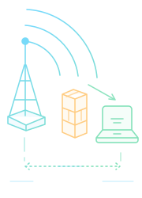

Come si trasmettono Gigabit al secondo senza fili? Confronta nello schema le antenne multiple, osserva come il Beamforming concentra l'energia sul tuo telefono e scopri come i rimbalzi del segnale sui muri sono diventati un'arma vincente invece che un difetto!

🧠
Concetti cardine:
Modulazione di ampiezza e fase (QAM, Quadrature Amplitude Modulation), interferenza costruttiva e distruttiva tra onde radio e propagazione multipath (rimbalzi su pavimenti e pareti).
In questa lezione
📡
Più flussi e un segnale più diretto. Distinguerai MIMO, che usa più antenne per trasportare flussi di dati, dal beamforming, che combina i segnali per favorire una direzione.
🔬
Il fascio nello spazio. Userai lo schema e il modello 3D per osservare come cambia la direzione favorita quando si sposta il dispositivo.
🧩
Dalle sottoportanti ai bit. Vedrai come OFDM divide il canale in molte sottoportanti e come le modulazioni QAM cambiano il numero di bit per simbolo.
1. MIMO e Beamforming: Due Effetti da Distinguere
Un’antenna distribuisce l’energia secondo un diagramma di radiazione. Con il beamforming, più antenne coordinano i segnali per favorire la ricezione in una direzione. Il MIMO può invece usare più flussi spaziali per trasportare dati diversi sullo stesso canale. Confronta questi effetti nello schema, poi sposta il client.
Nello schema, AP (Access Point) indica il punto di accesso. SISO (Single Input Single Output) indica una sola antenna per lato.
Esperimento 3D
Ruota il fascio delle antenne
Sposta il client e osserva dove si allunga il diagramma. Trascina il disegno, oppure selezionalo e usa le frecce, per guardarlo da un’altra angolazione.
Disattiva il beamforming per confrontare i due diagrammi. Dove la forma si allunga, la radiazione è favorita. Qui le quattro antenne coordinano lo stesso segnale.
Ipotesi del modello
Quattro elementi allineati a mezza lunghezza d’onda, senza ostacoli. Il raggio segue la radice della potenza normalizzata del modello, con un minimo grafico. Il diagramma mostra come si distribuisce la radiazione: non rappresenta né un limite di copertura né valori di potenza in dBm (decibel riferiti a un milliwatt).
2. OFDM: Centinaia di Onde Indipendenti in 20 megahertz (MHz)
Invece di modulare una sola portante a velocità vertiginosa (soggetta a fading selettivo e distruzione su una sola frequenza), l'OFDM (Orthogonal Frequency Division Multiplexing) scompone il canale da 20 MHz in 52 sottoportanti (in 802.11a/g/n) o 256 sottoportanti (in 802.11ax).
Ciascuna sottoportante viaggia a velocità più rilassata ed è matematicamente ortogonale alle vicine (il picco di ciascuna cade esattamente sullo zero di tutte le altre): possono sovrapporsi nello spazio delle frequenze senza generare alcuna interferenza tra sottoportanti (ICI, Inter-Carrier Interference)!
🪞Il Nemico Diventato Eroe: Come il MIMO Sfrutta i Rimbalzi sui Muri
Nelle prime telecomunicazioni wireless degli anni '90, il multipath (il fatto che il segnale rimbalzi su piastrelle, specchi, computer e pareti arrivando al ricevitore con ritardi sfasati) era considerato una maledizione: generava echi distruttivi che cancellavano il segnale (fading).
Con l'avvento del MIMO (Multiple Input Multiple Output) in 802.11n, gli ingegneri hanno ribaltato la fisica: le matrici di calcolo matematiche del processore digitale di segnali (DSP, Digital Signal Processor) usano i percorsi multipli di rimbalzo per distinguere e decodificare 2, 4 o 8 flussi di dati totalmente differenti contemporaneamente sulla stessa frequenza! Più rimbalzi ci sono nell'aula, più i percorsi sono scorrelati e più il MIMO riesce a raddoppiare o quadruplicare la velocità. La stanza piena di ostacoli è diventata un acceleratore di banda!
La Scalata delle Modulazioni QAM: Da 1 Bit a 12 Bit per Simbolo
In base alla rapporto segnale/rumore (SNR, Signal-to-Noise Ratio), il modem radio adatta dinamicamente la propria costellazione:
Modulazione
Punti Costellazione
Bit per Simbolo
Segnale Richiesto
Standard di Riferimento
BPSK (Binary Phase Shift Keying, modulazione a due fasi)
2 stati
1 bit/simbolo
Pessimo (anche a -85 dBm)
Fallback di emergenza
QPSK (Quadrature Phase Shift Keying, modulazione a quattro fasi)
4 stati
2 bit/simbolo
Scarso
802.11a/b/g
16-QAM / 64-QAM
16 / 64 stati
4 o 6 bit/simbolo
Medio / Buono
Wi-Fi 4 (802.11n)
256-QAM
256 stati
8 bit/simbolo
Ottimo (> -65 dBm)
Wi-Fi 5 (802.11ac)
1024-QAM
1024 stati
10 bit/simbolo
Eccellente (> -55 dBm)
Wi-Fi 6 (802.11ax)
4096-QAM
4096 stati
12 bit/simbolo
Perfetto (> -50 dBm line-of-sight)
Wi-Fi 7 (802.11be)
Quando il segnale cambia anche da vicino
Un segnale radio può arrivare sia per via diretta sia dopo una riflessione. Le due onde possono rinforzarsi oppure indebolirsi.
Se sposti il ricevitore o si muove un ostacolo, cambiano i percorsi e cambia il modo in cui le onde si sommano. Un calo del segnale dovuto a queste variazioni è un esempio di fading. Può capitare anche con il trasmettitore alla stessa potenza.
Prova prima a cambiare posizione e ripeti la misura. Se il segnale varia molto, usare antenne in posizioni diverse può aiutare: dove una riceve male, l’altra può ricevere meglio. Un margine di potenza dà invece una riserva contro cali moderati.
Controlla il tuo ragionamento
In un cortile il segnale cala vicino a una parete metallica e migliora spostandosi di poco. La parete può riflettere il segnale. Il piccolo spostamento cambia la somma fra onda diretta e riflessa.
3. Checkpoint di Autovalutazione
Metti alla prova la tua comprensione dello strato fisico e delle tecnologie MIMO/Beamforming:
Più antenne possono aiutare in due modi. Possono trasportare flussi di dati diversi sullo stesso canale oppure coordinare i segnali per favorire la ricezione in una direzione.
Le due tecniche possono lavorare insieme.
MIMO · Multiple Input Multiple Output, uso di più antenne ai due estremi del collegamento.
MIMO · Più flussi. Due sequenze di dati diverse viaggiano nello stesso momento.
Beamforming · Più energia utile. Le antenne coordinano i segnali per favorire il ricevitore.
Quattro antenne per lato, fino a quattro flussi
In un collegamento MIMO 4×4 ci sono quattro catene radio a ciascun estremo. Se i percorsi sono abbastanza distinti, il ricevitore può separare fino a quattro flussi.
Il numero effettivo dipende anche dal dispositivo e da come arrivano i segnali.
MIMO · Multiple Input Multiple Output, più antenne in trasmissione e ricezione.
Il punto di accesso arriva a quattro flussi. Il telefono ne supporta due. Quanti può riceverne?
Al massimo due. Conta anche il limite del telefono.
Le antenne restano ferme, il segnale cambia direzione
Con il beamforming le antenne si coordinano: le onde si sommano meglio verso il dispositivo. Sposta il client e confronta i due diagrammi.
Tante frequenze vicine, ciascuna con i suoi dati
Con l’OFDM il canale è composto da molte sottoportanti. Ognuna è una frequenza usata per trasportare una parte dei dati.
Sono ortogonali: idealmente, dove si misura il massimo di una, i contributi delle altre si annullano. Il ricevitore riesce così a distinguerle.
OFDM · Orthogonal Frequency Division Multiplexing, trasmissione parallela su sottoportanti ortogonali.
Posizione delle sottoportanti nel canale
Frequenza 1
Frequenza 2
Frequenza 3
Frequenza 4
Curiosità
Gli echi del segnale Wi-Fi
In aula un’onda può arrivare al telefono direttamente oppure dopo un rimbalzo su una parete. Le copie ritardate possono indebolire il segnale.
Con più antenne, percorsi sufficientemente distinti possono invece aiutare il ricevitore a separare i flussi.
Lo stesso segnale, due percorsi
PareteAPClient
Diretto. Dall’AP al client.
Riflesso. Rimbalza sulla parete e arriva più tardi.
Più punti, più bit per simbolo
Con la QAM ogni punto rappresenta una combinazione di bit. Più punti offre la costellazione, più bit porta ogni simbolo.
Punti della costellazione. Con b bit per simbolo ci sono 2b punti.
I punti diventano più vicini. Per distinguere simboli molto simili serve un segnale più pulito rispetto al rumore.
QAM · Quadrature Amplitude Modulation, modulazione che rappresenta i dati con punti di una costellazione.
16-QAM · 4 bit. 2⁴ = 16 combinazioni.
256-QAM · 8 bit. 2⁸ = 256 combinazioni.
1024-QAM · 10 bit. 2¹⁰ = 1024 combinazioni.
4096-QAM · 12 bit. 2¹² = 4096 combinazioni.
Esercizio lampo
Conta i bit di un simbolo
Se ogni simbolo porta b bit, la costellazione ha 2b punti. In 16-QAM ogni punto corrisponde a una combinazione di bit.
Quanti bit porta ogni simbolo della 16-QAM?
Soluzione guidata
24 = 16. Ogni simbolo porta 4 bit.
Quando il segnale cambia anche da vicino
Vicino a una parete metallica arrivano l’onda diretta e quella riflessa. Se si indeboliscono a vicenda, il livello ricevuto cala.
Che misura faresti prima di aumentare la potenza?
Ripeterei la misura spostando il ricevitore. Se il livello risale, la posizione e le riflessioni meritano una verifica.
Sfida alla classe
Un solo flusso, segnale debole. Il punto di accesso può inviare fino a due flussi. Il portatile sa riceverne uno solo e si trova a sinistra rispetto alla direzione frontale delle antenne.
Quale scelta aiuta il portatile: inviare due flussi indipendenti o orientare un solo flusso verso di lui? Prevedete come cambierebbe il grafico e quanti flussi riceverebbe.
Soluzione guidata
Scegliete il beamforming: le antenne coordinano lo stesso flusso per favorire la direzione del portatile.
Nel grafico la zona di emissione principale si orienta verso il client. Il numero di flussi resta uno, perché il portatile ne gestisce al massimo uno.
Da ricordare
MIMOPuò trasportare più flussi sullo stesso canale se entrambi gli apparati riescono a gestirli.
BeamformingLe antenne si coordinano per favorire il segnale verso il dispositivo.
OFDMLa trasmissione distribuisce i dati su molte frequenze vicine nello stesso canale.